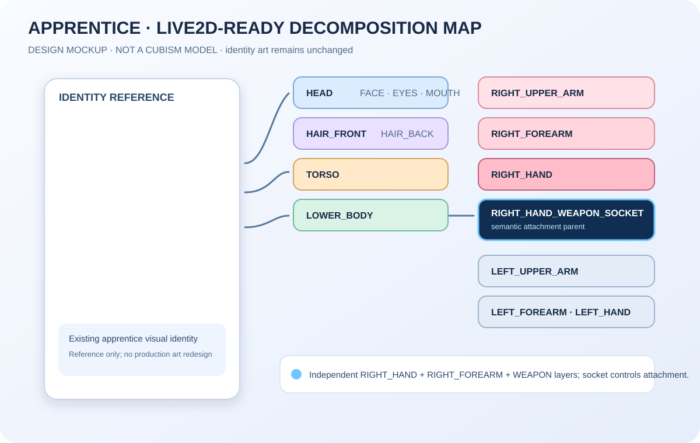

No authorized Live2D Cubism SDK/runtime or model binary was found in this environment. This page does not claim to execute Live2D; it records the proposed rig, socket contract, and visual target so an Owner can compare it with Paper Doll/A054.
No app.py, route, feature flag, combat/equipment authority, persistence, payment, schema, SW/static release, current Hero renderer, or Production asset was changed. A054 remains a separate experiment.
ACTUAL IDENTITY ART + SEPARATE ATTACHMENT MOCK
Same apprentice rig, swappable weapon
SEPARATE LAYERS · SOCKET-DRIVEN
EXISTING APPRENTICE REFERENCE · CLOSED GRIP/FOREARM REFERENCE · WEAPON ART IS NOT BAKED INTO CHARACTER
characterRigId
apprentice_live2d_candidate_rig_v0
handRigId apprentice_right_hand_grip_rig_v0
socket RIGHT_HAND_WEAPON_SOCKET
STATIC DESIGN EVIDENCE
Natural one-hand grip target
A geometry-level target for the production mesh: handle enters the palm, four fingers wrap around it, and the thumb opposes the finger mass. The blue point is the semantic socket; the orange line is the weapon grip axis.
PROPOSED ART PREP
Drawable / deformer hierarchy
The production art pass would separate the right hand and forearm from the weapon. This spike keeps the character identity unchanged and records the minimum hierarchy only.

Full decomposition map · design mockup · no Cubism model included
Open standalone socket / grip-axis diagram · included in the Owner review pack
Minimum parameter set
9 PARAMETERSWeapon swap contract
SAME RIGwooden_swordgripPoint (128, 208) · width 28
→ socketiron_swordgripPoint (128, 208) · width 30
→ socketcharacterRigId
apprentice_live2d_candidate_rig_v0handRigIdapprentice_right_hand_grip_rig_v0Maintainability warning: an actual Cubism art pass must validate corrective deformation for different handle widths. The mock does not prove that no bespoke correction art will ever be needed.
LOCAL BROWSER MEASUREMENT
Mock viewer cost / motion readout
Values below are measured by this static design mock when served locally. They are not Live2D model/runtime benchmarks. Memory is reported only when the browser exposes a supported API.
First rendermeasuring…DOM/SVG mock
Mock loop FPSmeasuring…requestAnimationFrame
Design contract bytesmeasuring…rig-model.json
Referenced art bytesmeasuring…identity + grip + weapons
Mock JS bytesmeasuring…not official runtime
Approx memorynot measurableno fabricated estimate
Waiting for local measurements…
Engineering comparison
NARROW SCOPEDimensionLive2D candidatePaper Doll / A054
Grip qualityHigh potential with mesh/correctivesA054 improves attachment; pose/raster bounded
Weapon swapSocket + metadataUniversal art/pose composition
MotionStrong; runtime dependentBasic pose/static composition
Browser/mobileSDK/WebGL/memory risk unverifiedLower runtime dependency
20-character burdenHigh art/rig/QA/licensingLower to medium; bounded asset work
Project dependencyOfficial SDK/license currently blockedExisting project assets
20-character scale estimate
RANGE ONLY- Art decomposition2–5 artist-days/character · 40–100 days
- Rig setup + QA1–3 days/character · 20–60 days
- New one-hand weapon0.25–1 day after socket standard
- Shared motion setup1–3 days initially, then tune per character
- Unique exceptions0.5–3 days each; unusual poses can exceed
Assumes no full lip-sync/facial library, heavy cloth physics, or combat animation suite. SDK licensing, runtime integration, atlas optimization, browser QA, and mobile profiling are additional.